升到 100 級遇見固拉多，免費版就能拿 400 寶可幣
GO Pass：11月
GO Pass：11月已經自動發給所有訓練家，做 Pass 課題累積 GO點數就能升級，最大目標是 100 級的固拉多。免費版整個月下來能拿到 400 寶可幣，等於不花錢也能存到商店幣；豪華版再多 1,000 寶可幣、超級孵化器與更多寶可夢相遇。每天有點數上限，平常穩定刷，11/28～29 週末上限解除時再一口氣衝刺。
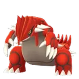
100 級獎勵固拉多等級 20，有機會異色重要時間
以下為當地時間（台灣時間）。
- 11/3（二）10:00活動GO Pass：11月開始系統自動發放免費版，開始累積 GO點數。
- 11/3–12/1每天有上限活動每日累積 GO點數做 Pass 課題升級；每天可累積的點數有上限，建議每天刷滿。
- 11/28–11/2900:00 – 23:59活動GO點數無每日上限週末兩天不限點數，落後的進度可以在這兩天補回來。
- 12/1（二）10:00活動GO Pass 結束之後無法再累積點數。
- 12/3（四）10:00 前活動領取獎勵截止已解鎖但還沒領的獎勵會在這個時間失效。
本月重點
遇見固拉多
免費版升到 100 級就能遇見等級 20 的固拉多，運氣好還會是異色；97、98 級另有固拉多的糖果。
白拿 400 寶可幣
每 10 級左右發一次寶可幣，從 10 級的 10 枚一路增加到 90 級的 90 枚，合計 400 枚。
寶可幣合計 1,400
豪華版每一階的寶可幣大約加倍，100 級再給 200 枚，比免費版多 1,000 枚，另有 1 個超級孵化器。
11/28～29 無點數上限
這兩天累積 GO點數沒有每日上限，平常進度落後的人可以在這兩天補齊。
 免費版與豪華版獎勵
免費版與豪華版獎勵
完成 Pass 課題累積 GO點數，每 100 點升 1 級。豪華版隨時都能購買，購買前已達成的等級獎勵也能補領；101～200 級每級還有星星沙子。
- 100 級遇見固拉多（等級 20）
- 寶可幣共 400 枚
- 幸運蛋 ×1、神奇糖果 ×13、神奇糖果XL ×1
- 星星沙子共 13,250（101～200 級每級再 50）
- 極巨粒子 500、一般／特殊招式學習器各 1 個
- 15 次寶可夢相遇（含極巨化稚山雀、極巨化三蜜蜂）
- 寶可幣再多 1,000 枚（合計 1,400）
- 超級孵化器 ×1
- 額外 11 次寶可夢相遇（含極巨化列陣兵、鋁鋼龍、阿勃梭魯）
- 星星沙子再多 42,250（101～200 級每級再 100）
- 神奇糖果 ×8、神奇糖果XL ×7、固拉多的糖果 ×10 與糖果XL ×3
- 極巨粒子 2,000、招式學習器各 2 個、銀色凰梨果 ×6
主里程碑獎勵加碼
- 1 級交換寶可夢時多拿 1 顆糖果；訓練家等級 31 以上交換必定獲得 1 顆糖果XL免費版
- 25 級每天最多開 40 個禮物、轉補給站或道館每天最多拿 125 個禮物、包包多放 10 個禮物免費版
- 50 級散步小薰香的效果持續時間加倍免費版
- 75 級孵蛋獲得的星星沙子與 XP 增加免費版
- 25 級加成升級為：每天最多開 50 個禮物、每天最多拿 150 個禮物、包包多放 20 個禮物豪華版
- 「＋10級」版本會直接給足夠升到 11 級的 GO點數。
- 價格以美元或當地貨幣的等值價格計算；豪華版是否開放購買可能依地區而不同。
- 各等級獎勵的數量依玩家社群整理的等級表加總，實際以遊戲內顯示為準。
 可遇見的寶可夢
可遇見的寶可夢
小字是解鎖的等級；豪華版可以同時拿到兩邊的相遇。
免費版16 次
- 極巨化
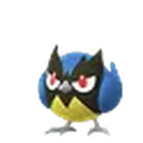
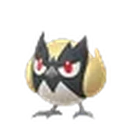
極巨化稚山雀3 級 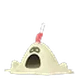
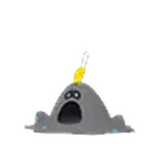
沙丘娃7 級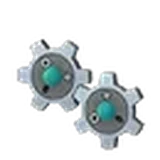
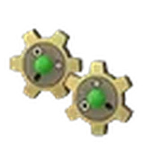
齒輪兒12 級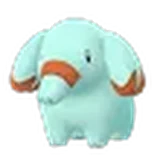
小小象22 級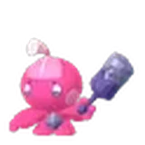
小鍛匠32 級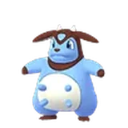
大奶罐37 級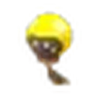
光蚪仔42 級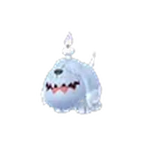
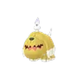
墓仔狗47 級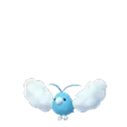
青綿鳥52 級- 過動猿57 級
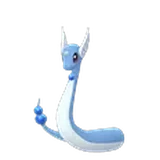
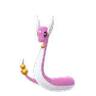
哈克龍67 級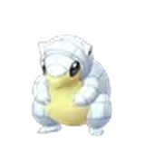
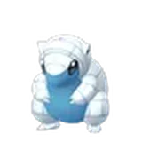
穿山鼠阿羅拉的樣子・72 級- 極巨化
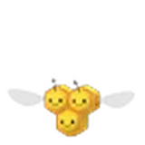
極巨化三蜜蜂77 級 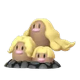
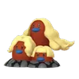
三地鼠阿羅拉的樣子・87 級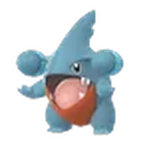
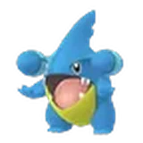
圓陸鯊92 級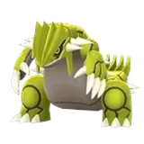
固拉多100 級・等級 20
豪華版額外 11 次
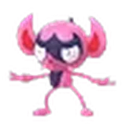
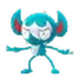
搗蛋小妖9 級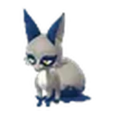
偷兒狐17 級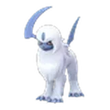
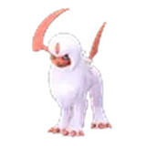
阿勃梭魯24 級- 極巨化
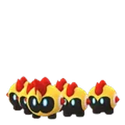
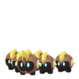
極巨化列陣兵27 級 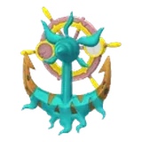
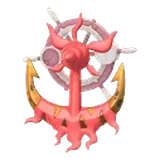
破破舵輪39 級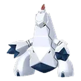
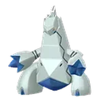
鋁鋼龍54 級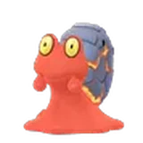
熔岩蝸牛62 級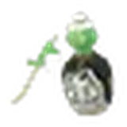
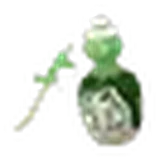
斯魔茶69 級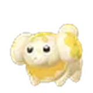
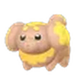
狗仔包82 級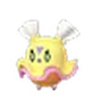
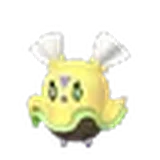
飄飄雛84 級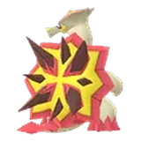
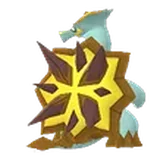
爆焰龜獸94 級
官方只公布固拉多有機會是異色；其他寶可夢的異色標示依玩家社群的異色清單，實際以遊戲內為準。
 Web Store 購買特典
Web Store 購買特典
在 Pokémon GO Web Store 購買豪華版，GO Pass 一開始就會生效，另外附贈道具。
 高級球 ×10
高級球 ×10- 活力塊 ×5、全滿藥 ×5
- 特級對戰入場券 ×1
- 高級球 ×10
- 活力塊 ×5、全滿藥 ×5
- 特級對戰入場券 ×2
- 高級球 ×20
- 活力塊 ×10、全滿藥 ×10
- 特級對戰入場券 ×5
攻略重點
- 每天把點數刷到上限
平日每天都有 GO點數上限，與其最後幾天趕進度，不如每天固定刷滿。
- 週末 11/28～29 衝刺
這兩天沒有每日上限，離 100 級還差一截的話，留到這個週末集中做 Pass 課題。
- 記得 12/3 前領獎
GO Pass 12/1 10:00 結束，但獎勵要在 12/3 10:00 前領完，沒領的會直接消失。
- 豪華版不急著買
豪華版隨時可以升級，之前達成的等級獎勵也能補領，可以先看自己能刷到幾級再決定。
- 25 級的禮物加成很實用
到 25 級後每天能開的禮物變多，常跟好友互送禮物的人，優先把等級推過 25 級。
 常見問題
常見問題
GO Pass：11月什麼時候結束？
2026 年 12 月 1 日 10:00 結束累積點數；已解鎖的獎勵要在 12 月 3 日 10:00 前領取。
不付費可以拿到固拉多嗎？
可以。免費版升到 100 級就能遇見固拉多（等級 20），運氣好還會遇到異色。
豪華版多少錢？差在哪裡？
US$7.99，或 US$9.99 直接加 10 級。豪華版比免費版多 1,000 寶可幣、1 個超級孵化器、11 次寶可夢相遇與更多道具，25 級的禮物加成也會升級。
中途才買豪華版會吃虧嗎？
不會。豪華版隨時可以購買，購買前已達成等級的豪華版獎勵也能補領。
100 級以後還有獎勵嗎？
有，101～200 級每升一級可再拿星星沙子，免費版 50、豪華版 100。